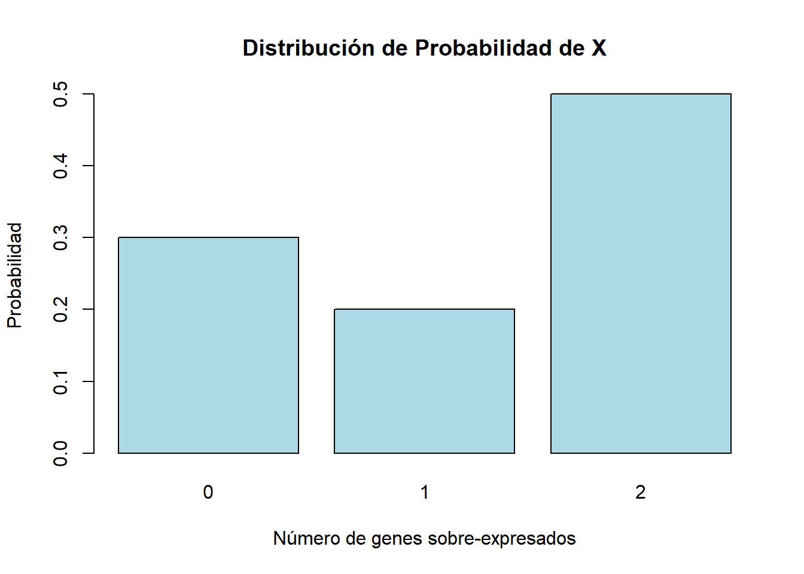
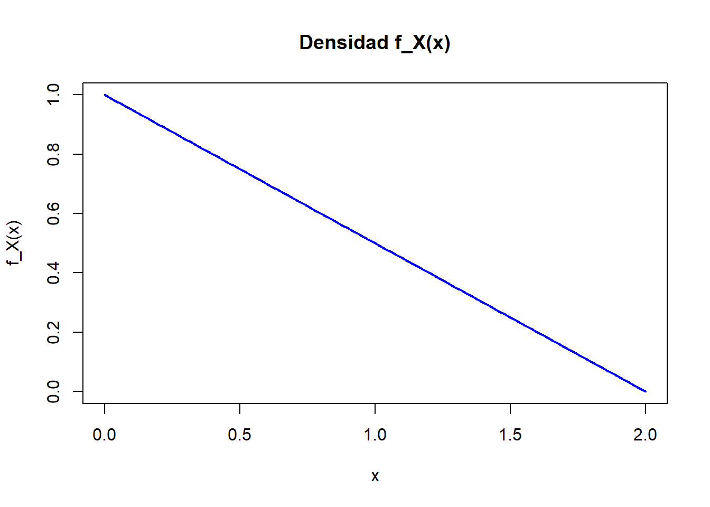
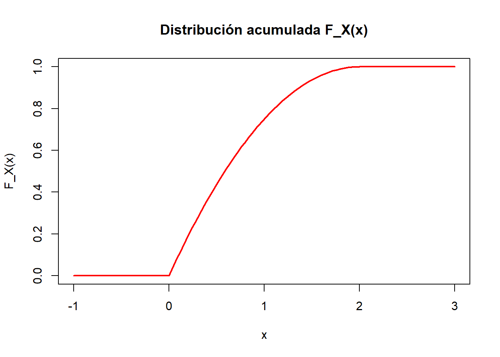
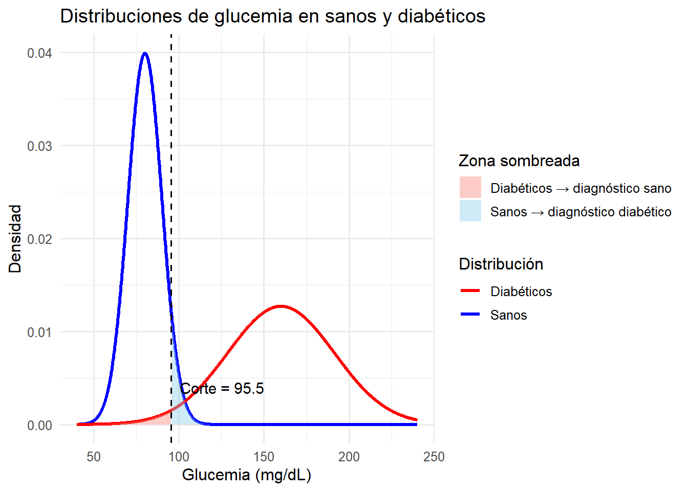

Capítulo 17 Variables aleatorias y Distribuciones de probabilidad
17.1 Ejercicio 2.1
Se sabe que la presencia de algunas mutaciones en una región genómica puede influir en la sobreexpresión (“Up”) o la inhibición (“Down”) de dos genes distintos. Se conocen 6 variantes de dicha mutación y, dado que los efectos de la sobreexpresión de los dos genes son muy similares se ha optado por contar únicamente cuántos genes se sobre-expresan en presencia de cada una de ellas (un individuo puede presentar una única variante). Un estudio realizado sobre 300 pacientes ha permitido estimar las siguientes probabilidades de aparición de cada mutación así como el número de genes sobre-expresados asociados a las mismas. Los resultados se encuentran disponibles en la tabla siguiente:
| Mutación | Probabilidad | \(N^{\circ}\) de genes |
|---|---|---|
| \(e_{1}\) | 0.15 | 0 |
| \(e_{2}\) | 0.13 | 1 |
| \(e_{3}\) | 0.07 | 1 |
| \(e_{4}\) | 0.30 | 2 |
| \(e_{5}\) | 0.20 | 2 |
| \(e_{6}\) | 0.15 | 0 |
Consideremos la variable aleatoria: \(X=\) “Número de genes sobre expresados”
Obtener su distribución de probabilidad y representarla gráficamente
Calcular la esperanza y la varianza de dicha variable
SOLUCIÓN
La variable aleatoria que nos interesa es \(X=\) “Número de genes sobre-expresados”.
17.1.1 Distribución de probabilidad
Para obtener la distribución de probabilidad de \(X\), necesitamos sumar las probabilidades de las mutaciones que tienen el mismo número de genes sobre-expresados.
Los posibles valores de \(X\) son 0, 1 y 2. A continuación calculamos la probabilidad de cada uno:
- Para \(X = 0\), las mutaciones son \(e_1\) y \(e_6\):
\[ P(X = 0) = P(e_1) + P(e_6) = 0.15 + 0.15 = 0.30 \]
- Para \(X = 1\), las mutaciones son \(e_2\) y \(e_3\):
\[ P(X = 1) = P(e_2) + P(e_3) = 0.13 + 0.07 = 0.20 \]
- Para \(X = 2\), las mutaciones son \(e_4\) y \(e_5\):
\[ P(X = 2) = P(e_4) + P(e_5) = 0.30 + 0.20 = 0.50 \]
La distribución de probabilidad de \(X\) es la siguiente:
\[ P(X = x) = \begin{cases} 0.30 & \text{si } x = 0, \\ 0.20 & \text{si } x = 1, \\ 0.50 & \text{si } x = 2. \end{cases} \]
Podemos representarla gráficamente usando R:
# Valores de X y sus probabilidades
X_values <- c(0, 1, 2)
probabilities <- c(0.30, 0.20, 0.50)
# Crear el gráfico
barplot(probabilities, names.arg = X_values, col = "lightblue",
main = "Distribución de Probabilidad de X",
xlab = "Número de genes sobre-expresados", ylab = "Probabilidad")
17.1.2 Esperanza y varianza
La esperanza (o valor esperado) de una variable aleatoria discreta \(X\) se calcula como:
\[ E(X) = \sum_{x} x \cdot P(X = x) \]
Sustituyendo los valores:
\[ E(X) = 0 \cdot 0.30 + 1 \cdot 0.20 + 2 \cdot 0.50 = 0 + 0.20 + 1.00 = 1.20 \]
La varianza de \(X\) se calcula como:
\[ \text{Var}(X) = E(X^2) - [E(X)]^2 \]
Primero calculamos \(E(X^2)\):
\[ E(X^2) = \sum_{x} x^2 \cdot P(X = x) \]
\[ E(X^2) = 0^2 \cdot 0.30 + 1^2 \cdot 0.20 + 2^2 \cdot 0.50 = 0 + 0.20 + 2.00 = 2.20 \]
Entonces, la varianza es:
\[ \text{Var}(X) = 2.20 - (1.20)^2 = 2.20 - 1.44 = 0.76 \]
Verificamos los cálculos con R:
# Calcular esperanza y varianza
esperanza <- sum(X_values * probabilities)
esperanza_cuadrado <- sum(X_values^2 * probabilities)
varianza <- esperanza_cuadrado - esperanza^2
esperanza## [1] 1.2
varianza## [1] 0.7617.2 Ejercicio 2.2
Para describir el número de mutaciones presentes en un volumen estándar de un tumor unos investigadores han propuesto el modelo siguiente
\[ p(x)=\frac{K}{2+x}, x=0,1,2,3,4,5 \]
- Determinar qué valor debe de tener \(K\) para que \(p(x)\) sea una función de masa de probabilidad
- Calcular su esperanza y su varianza
- Calcular las probabilidades de los sucesos:
- 1 Un tumor presenta exactamente tres mutaciones
- 2 Un tumor presenta al menos una mutación
- 3 Un tumor presenta como máximo dos mutaciones.
SOLUCIÓN
Se considera el modelo para la distribución de probabilidades de mutaciones en un tumor dado por:
\[ p(x)=\frac{K}{2+x}, x=0,1,2,3,4,5 \]
17.2.1 Valor de \(K\)
Para que \(p(x)\) sea una función de masa de probabilidad, la suma de todas las probabilidades debe ser igual a 1. Es decir:
\[ \sum_{x=0}^{5} p(x) = 1 \]
Sustituyendo la fórmula de \(p(x)\):
\[ \sum_{x=0}^{5} \frac{K}{2+x} = 1 \]
Simplificamos la suma:
\[ K \sum_{x=0}^{5} \frac{1}{2+x} = 1 \]
La suma es:
\[ \sum_{x=0}^{5} \frac{1}{2+x} = \frac{1}{2} + \frac{1}{3} + \frac{1}{4} + \frac{1}{5} + \frac{1}{6} + \frac{1}{7} \]
Podemos calcular esta suma numéricamente en R:
# Valores de la suma
suma <- sum(1 / (2 + 0:5))
# Calcular el valor de K
K <- 1 / suma
K## [1] 0.627802717.2.2 Esperanza y la varianza
La esperanza de \(X\) se calcula como:
\[ E(X) = \sum_{x=0}^{5} x \cdot p(x) = \sum_{x=0}^{5} x \cdot \frac{K}{2+x} \]
La varianza se calcula usando:
\[ \text{Var}(X) = E(X^2) - [E(X)]^2 \]
Para esto, primero calculamos \(E(X^2)\):
\[ E(X^2) = \sum_{x=0}^{5} x^2 \cdot p(x) = \sum_{x=0}^{5} x^2 \cdot \frac{K}{2+x} \]
Podemos calcular la esperanza y la varianza en R de la siguiente forma:
# Calcular la esperanza
esperanza <- sum((0:5) * K / (2 + 0:5))
# Calcular la esperanza al cuadrado
esperanza_cuadrado <- sum((0:5)^2 * K / (2 + 0:5))
# Calcular la varianza
varianza <- esperanza_cuadrado - esperanza^2
esperanza## [1] 1.766816
varianza## [1] 2.76176917.2.3 Probabilidades
Probabilidad de que un tumor presente exactamente tres mutaciones
La probabilidad de que \(X = 3\) es:
\[ P(X = 3) = p(3) = \frac{K}{2+3} \]
Podemos calcularlo en R:
# Probabilidad de X = 3
P_X_3 <- K / (2 + 3)
P_X_3## [1] 0.1255605Probabilidad de que un tumor presente al menos una mutación
La probabilidad de que \(X \geq 1\) es:
\[ P(X \geq 1) = 1 - P(X = 0) \]
Podemos calcularlo en R:
# Probabilidad de X >= 1
P_X_1 <- 1 - K / (2 + 0)
P_X_1## [1] 0.6860987Probabilidad de que un tumor presente como máximo dos mutaciones
La probabilidad de que \(X \leq 2\) es:
\[ P(X \leq 2) = P(X = 0) + P(X = 1) + P(X = 2) \]
Podemos calcularlo en R:
# Probabilidad de X <= 2
P_X_2 <- sum(K / (2 + 0:2))
P_X_2## [1] 0.680119617.3 Ejercicio 2.3
Un modelo simplificado del tiempo de supervivencia, en años, tras un diagnóstico de una variante de leucemia es el siguiente:
\[ f_{x}(x)=-0.5 \cdot x+1, \quad \text { donde } \quad 0 \leq x \leq 2 \]
Comprobar que \(f_{X}\) es una densidad. Representarla gráficamente.
Calcular \(\mathrm{F}_{\mathrm{X}} \mathrm{y}\) representarla gráficamente.
Calcular \(P(X \geq 1), P(X>1), P(X=1), f_{x}(1)\).
Calcular la probabilidad de que un individuo diagnosticado con leucemia sobreviva :
- menos de seis meses, (ii) entre seis meses y un año, (iii) más de dos años.
Calcular \(E(X)\) i \(\operatorname{Var}(X)\).
En vista que el modelo anterior no ha resultado satisfactorio una bioestadística ha propuesto un modelo alternativo consistente en modelizar la variable como:
\[ g_{X}(x)=\exp (-k x), \text { dondex } \geq 0 \]
Calcular la constante \(k\) para que \(\mathrm{g}_{\mathrm{x}}\) sea una función de densidad de probabilidad. Repetir los cálculos de los apartados b), c), d) y e) con el nuevo modelo. Discutir adecuación de ambos modelos a una situación real.
SOLUCIÓN
17.3.1 \(f_X(x)\) es una densidad
Para comprobar que \(f_X(x)\) es una función de densidad, necesitamos verificar que cumple las dos condiciones básicas:
- \(f_X(x) \geq 0\) para todo \(x\) en su dominio.
- La integral de \(f_X(x)\) sobre todo su dominio debe ser 1, es decir:
\[ \int_0^2 f_X(x) \, dx = 1 \]
La función de densidad dada es \(f_X(x) = -0.5 \cdot x + 1\) con \(0 \leq x \leq 2\).
Primero, comprobamos que \(f_X(x) \geq 0\) para \(x \in [0, 2]\). Evaluamos los valores extremos:
- \(f_X(0) = -0.5 \cdot 0 + 1 = 1\)
- \(f_X(2) = -0.5 \cdot 2 + 1 = 0\)
La función es no negativa en el intervalo dado.
Ahora, calculamos la integral:
\[ \int_0^2 (-0.5 \cdot x + 1) \, dx = \left[ -0.25 \cdot x^2 + x \right]_0^2 = (-0.25 \cdot 4 + 2) - (0) = 1 \]
Por lo tanto, \(f_X(x)\) cumple con ambas condiciones y es una función de densidad.
17.3.2 Gráfica de \(f_X(x)\)
# R code to plot the density function
f_x <- function(x) -0.5 * x + 1
curve(f_x, from = 0, to = 2, col = "blue", lwd = 2, ylab = "f_X(x)", xlab = "x",
main = "Densidad f_X(x)")
17.3.3 Función de distribución
Calcular \(F_X(x)\) y representarla gráficamente
La función de distribución acumulada (CDF) \(F_X(x)\) se obtiene integrando la función de densidad:
\[ F_X(x) = \int_0^x (-0.5 \cdot t + 1) \, dt \]
Para \(x \in [0, 2]\), tenemos:
\[ F_X(x) = \left[-0.25 \cdot t^2 + t\right]_0^x = -0.25 \cdot x^2 + x \]
Para \(x < 0\), \(F_X(x) = 0\), y para \(x > 2\), \(F_X(x) = 1\).
Gráfica de \(F_X(x)\)ç
# R code to plot the CDF function
F_x <- function(x) ifelse(x < 0, 0, ifelse(x > 2, 1, -0.25 * x^2 + x))
curve(F_x, from = -1, to = 3, col = "red", lwd = 2, ylab = "F_X(x)", xlab = "x",
main = "Distribución acumulada F_X(x)")
17.3.4 Probabilidades y \(f_X(1)\)
- \(P(X \geq 1) = 1 - F_X(1)\):
\[ F_X(1) = -0.25 \cdot 1^2 + 1 = 0.75 \] Por lo tanto, \(P(X \geq 1) = 1 - 0.75 = 0.25\).
\(P(X > 1)\): Como \(X\) es una variable continua, \(P(X > 1) = P(X \geq 1) = 0.25\).
\(P(X = 1)\): Para una variable continua, la probabilidad puntual es 0, es decir, \(P(X = 1) = 0\).
\(f_X(1)\):
\[ f_X(1) = -0.5 \cdot 1 + 1 = 0.5 \]
17.3.5 Probabilidad de supervivencia
- Menos de seis meses (\(x = 0.5\)):
\[ P(X < 0.5) = F_X(0.5) = -0.25 \cdot 0.5^2 + 0.5 = 0.4375 \]
- Entre seis meses y un año (\(x \in [0.5, 1]\)):
\[ P(0.5 \leq X \leq 1) = F_X(1) - F_X(0.5) = 0.75 - 0.375 = 0.375 \]
- Más de dos años (\(x > 2\)): Como el dominio de \(X\) es \([0, 2]\), \(P(X > 2) = 0\).
17.3.6 \(E(X)\) y \(\operatorname{Var}(X)\)
- La esperanza de \(X\) es:
\[ E(X) = \int_0^2 x \cdot f_X(x) \, dx = \int_0^2 x \cdot (-0.5 \cdot x + 1) \, dx \]
Desarrollamos:
\[ E(X) = \int_0^2 (-0.5 \cdot x^2 + x) \, dx = \left[-\frac{0.5}{3} \cdot x^3 + 0.5 \cdot x^2\right]_0^2 \]
Calculamos:
\[ E(X) = -\frac{0.5}{3} \cdot 8 + 0.5 \cdot 4 = -\frac{4}{3} + 2 = \frac{2}{3} \]
- La varianza de \(X\) es:
\[ \operatorname{Var}(X) = E(X^2) - E(X)^2 \]
Primero calculamos \(E(X^2)\):
\[ E(X^2) = \int_0^2 x^2 \cdot f_X(x) \, dx = \int_0^2 x^2 \cdot (-0.5 \cdot x + 1) \, dx \]
Desarrollamos y calculamos:
\[ E(X^2) = \int_0^2 (-0.5 \cdot x^3 + x^2) \, dx = \left[-\frac{0.5}{4} \cdot x^4 + \frac{1}{3} \cdot x^3\right]_0^2 \]
\[ E(X^2) = -\frac{0.5}{4} \cdot 16 + \frac{1}{3} \cdot 8 = -2 + \frac{8}{3} = \frac{2}{3} \]
Finalmente:
\[ \operatorname{Var}(X) = E(X^2) - E(X)^2 = \frac{2}{3} - \left(\frac{2}{3}\right)^2 = \frac{2}{3} - \frac{4}{9} = \frac{2}{9} \]
17.3.7 Modelo alternativo \(g_X(x)\)
Dado el modelo alternativo \(g_X(x) = \exp(-k \cdot x)\) para \(x \geq 0\), la constante \(k\) se determina imponiendo que la integral de la función de densidad debe ser 1:
\[ \int_0^\infty \exp(-k \cdot x) \, dx = 1 \]
Resolviendo:
\[ \frac{1}{k} = 1 \implies k = 1 \]
Por lo tanto, el nuevo modelo de densidad es \(g_X(x) = \exp(-x)\).
17.4 Ejercicio 2.4
Para estudiar la regulación hormonal de una línea metabólica se inyectan ratas albinas con un fármaco que inhibe la síntesis de proteínas del organismo. En general, 4 de cada 20 ratas mueren a causa del fármaco antes de que el experimento haya concluido. Si se trata a 10 animales con el fármaco, ¿cuál es la probabilidad de que al menos 8 lleguen vivas al final del experimento?
SOLUCION
En este problema en el que tenemos grupos de 10 animales independientes, cada uno de los cuales puede sobrevivir o no resulta apropiada la distribución binomial.
La probabilidad de que una rata sobreviva al fármaco es \(p = \frac{16}{20} = 0.8\), dado que 4 de cada 20 ratas mueren.
El experimento se realiza con 10 ratas, por lo que tenemos \(n = 10\).
Queremos calcular la probabilidad de que al menos 8 ratas sobrevivan. Matemáticamente, esto corresponde a:
\[ P(X \geq 8) \]
donde \(X\) es el número de ratas que sobreviven y sigue una distribución binomial:
\[ X \sim \text{Binomial}(n=10, p=0.8) \]
17.4.1 Cálculo de la probabilidad
La probabilidad de que exactamente \(k\) ratas sobrevivan está dada por la fórmula de la binomial:
\[ P(X = k) = \binom{n}{k} p^k (1 - p)^{n-k} \]
Para responder la pregunta debemos calcular:
\[ P(X \geq 8) = P(X = 8) + P(X = 9) + P(X = 10) \] Esto puede calcularse:
- directamente usando la función de probabilidad acumulada implementada en R
- indirectamente calculando las probabilidades individuales y sumándolas.
En todo caso debemos recordar que al tratarse de una variable discreta si queremos usar \(F_X(x)\) para calcular \(P(X\geq k)\) deberemos tener en cuenta que: \[ P(X\geq k) = 1-P(X\leq k-1) \] En primer lugar calculamos esta suma utilizando la función de masa de probabilidad:
# Parámetros del problema
n <- 10
p <- 0.8
# Probabilidades P(X = 8), P(X = 9) y P(X = 10)
prob_8 <- dbinom(8, size = n, prob = p)
prob_9 <- dbinom(9, size = n, prob = p)
prob_10 <- dbinom(10, size = n, prob = p)
# Probabilidad total P(X >= 8)
prob_total <- prob_8 + prob_9 + prob_10
prob_total## [1] 0.6777995Si usamos la funcion de distribución, pbinom
1-pbinom (7, size = n, prob = p)## [1] 0.6777995Naturalmente ambos resultados coinciden. Obsérvese que al ser \(p=0.8\) valores altos resultan bastante probables, con lo que la
17.5 Ejercicio 2.5
En una cierta población se ha observado un número medio anual de 12 muertes por cáncer de pulmón. Si el número de muertes causadas por la enfermedad sigue una distribución de Poisson, ¿cuál es la probabilidad de que durante el año en curso: 1. haya exactamente 10 muertes por cáncer de pulmón? 2. 15 o más personas mueran a causa de la enfermedad? 3. 10 o menos personas mueran a causa de la enfermedad?
El número de muertes por cáncer de pulmón sigue una distribución de Poisson, que se usa para modelar la ocurrencia de eventos discretos dentro de un intervalo de tiempo, donde el valor esperado es proporcional al tamaño del intervalo. En este caso, el valor esperado es el número medio de muertes por año, que es 12. La función de masa de probabilidad (PMF) de una variable aleatoria \(X\) con distribución de Poisson y parámetro \(\lambda\) es:
\[ P(X = k) = \frac{\lambda^k e^{-\lambda}}{k!} \]
donde \(k\) es el número de eventos, \(\lambda\) es el valor esperado (12 en nuestro caso) y \(k!\) es el factorial de \(k\). Usaremos este modelo para resolver los apartados.
17.5.1 Probabilidad de que haya exactamente 10 muertes
La probabilidad de observar exactamente \(k = 10\) muertes se puede calcular usando la PMF de la distribución de Poisson con \(\lambda = 12\):
\[ P(X = 10) = \frac{12^{10} e^{-12}}{10!} \]
Podemos calcular este valor con R.
lambda <- 12
k <- 10
prob_10_muertes <- dpois(k, lambda)
prob_10_muertes## [1] 0.104837317.5.2 Probabilidad de que 15 o más personas mueran
Para obtener la probabilidad de que 15 o más personas mueran, necesitamos calcular la probabilidad acumulada de \(X \geq 15\). Esto se puede obtener restando de 1 la probabilidad acumulada de \(X < 15\), es decir:
\[ P(X \geq 15) = 1 - P(X < 15) = 1 - P(X \leq 14) \]
Usamos la función de probabilidad acumulada (CDF) de la Poisson en R.
k_15 <- 14
prob_15_o_mas <- 1 - ppois(k_15, lambda)
prob_15_o_mas## [1] 0.227975517.5.3 Probabilidad de que 10 o menos personas mueran
La probabilidad de que 10 o menos personas mueran es simplemente la probabilidad acumulada de \(X \leq 10\), que se puede calcular directamente con la CDF de la distribución de Poisson.
\[ P(X \leq 10) \]
Calculamos esto en R:
prob_10_o_menos <- ppois(k, lambda)
prob_10_o_menos## [1] 0.347229417.6 Ejercicio 2.6
Los daños a los cromosomas del óvulo o del espermatozoide, pueden causar mutaciones que conducen a abortos, defectos de nacimiento, u otras deficiencias genéticas. Un estudio sobre los efectos teratogénicos de la radiación ha determinado que la probabilidad de que tal mutación se produzca por radiación es del 10%. El resto son atribuibles a otras causas. Una vez detectadas 150 mutaciones,
- ¿cuántas se esperaría que se debiesen a radiaciones?
- ¿Cuál es la probabilidad de que solamente 10 se debiesen a radiaciones?
Solución
Para analizar el número de mutaciones que se deben a radiaciones, podemos considera dos modelos diferentes: uno basado en la distribución binomial y otro en la distribución de Poisson.
17.6.1 Justificación del uso de distribución binomial
La distribución binomial es adecuada cuando tenemos un número fijo de ensayos independientes y cada ensayo tiene dos posibles resultados: éxito (la mutación es debida a radiación) o fracaso (la mutación no es debida a radiación). En cada ensayo, la probabilidad de éxito es constante.
Esto se ajusta perfectamente a las condiciones del problema: - Hay 150 ensayos independientes (cada mutación observada puede estar o no causada por radiación). - Cada ensayo tiene dos posibles resultados: mutación por radiación o mutación por otra causa. - La probabilidad de éxito es constante y pequeña (\(p = 0.1\)). Por tanto, el número de mutaciones debidas a radiación se puede modelizar bien mediante una distribución binomial \(X \sim \text{Binomial}(n = 150, p = 0.1)\).
17.6.2 Justificación del uso de distribución de Poisson
La distribución de Poisson es adecuada para modelar el número de eventos raros que ocurren en un intervalo de tiempo, espacio, o cualquier otra unidad, cuando estos eventos ocurren de forma independiente y su probabilidad de ocurrencia es baja.
En este caso las “mutaciones debidas a radiación” pueden considerarse eventos raros dentro de un gran conjunto de mutaciones (150 mutaciones observadas, pero solo un 10% de ellas son debidas a radiación).
Puede considerarse además, que las mutaciones individuales pueden ocurrir de forma independiente entre sí, ya que la probabilidad de que una mutación se deba a radiación no afecta a la probabilidad de que otra mutación sea causada por radiación.
Estas condiciones son características de los procesos de Poisson y por tanto la distribución de Poisson es una elección natural para describir procesos en los que los eventos ocurren de manera aleatoria en un intervalo dado (por ejemplo, en un periodo de tiempo o un espacio), siempre que:
- Los eventos ocurran con una tasa promedio constante (en este caso, la tasa de mutaciones debidas a radiaciones es proporcional a la tasa global de mutaciones, multiplicada por la probabilidad \(p = 0.1\)).
- No haya límite teórico en el número de eventos que puedan ocurrir en un intervalo (aunque observamos un total de 150 mutaciones, teóricamente podríamos seguir detectando más mutaciones).
En el modelo de Poisson, el parámetro \(\lambda\) representa la tasa promedio de ocurrencia de los eventos (en este caso, mutaciones debidas a radiación). Si conocemos la tasa promedio de aparición de mutaciones por radiación (\(\lambda = n \cdot p\) en el contexto binomial, pero también se puede calcular directamente si conocemos la tasa de aparición de eventos raros), entonces podemos usar directamente la distribución de Poisson para modelar el número de eventos.
En este caso, \(\lambda = 150 \cdot 0.1 = 15\), que representa el número esperado de mutaciones debidas a radiación en el total observado de mutaciones.
17.6.3 Aproximación del modelo binomial por el de Poisson
La distribución de Poisson puede considerarse una aproximación de la binomial cuando el número de ensayos (\(n\)) es grande y la probabilidad de éxito (\(p\)) es pequeña. En este caso, el número esperado de éxitos, \(n \cdot p\), se mantiene moderado (en este caso, \(n \cdot p = 15\)).
Este resultado que se conoce como límite de Poisson establece que si:
- \(n\) es grande (muchos ensayos),
- \(p\) es pequeño (baja probabilidad de éxito),
- el producto \(n \cdot p = \lambda\) es moderado,
entonces la binomial \(X \sim \text{Binomial}(n, p)\) se puede aproximar por una distribución de Poisson con parámetro \(\lambda = n \cdot p\).
En este caso:
- \(n = 150\) es suficientemente grande.
- \(p = 0.1\) es pequeño.
- \(n \cdot p = 15\), lo cual es un valor razonable para usar la aproximación de Poisson.
Por tanto, el número de mutaciones debidas a radiaciones puede aproximarse por una distribución de Poisson \(X \sim \text{Poisson}(\lambda = 15)\).
17.6.4 Número esperado de mutaciones
En ambos modelos, la esperanza del número de mutaciones debidas a radiaciones es \(E[X] = n \cdot p\). Esto representa el número promedio de mutaciones debidas a radiaciones. Lo calculamos:
\[ E[X] = 150 \cdot 0.1 = 15 \]
Por lo tanto, se espera que alrededor de 15 mutaciones se deban a radiaciones.
17.6.5 Probabilidad de que exactamente 10 mutaciones se deban a radiaciones
17.6.5.1 Usando la distribución Binomial
La probabilidad de que exactamente 10 mutaciones se deban a radiaciones se puede calcular usando la PMF de la binomial:
\[ P(X = 10) = \binom{150}{10} (0.1)^{10} (0.9)^{140} \]
Usando R tenemos:
n <- 150
p <- 0.1
k <- 10
prob_binom_10 <- dbinom(k, n, p)
prob_binom_10## [1] 0.0459168117.6.5.2 Usando la aproximación de Poisson
La distribución de Poisson con \(\lambda = n \cdot p = 15\) también se puede usar para aproximar esta probabilidad. La probabilidad de obtener exactamente 10 mutaciones se calcula como:
\[ P(X = 10) = \frac{15^{10} e^{-15}}{10!} \]
Con R:
lambda <- 15
prob_pois_10 <- dpois(k, lambda)
prob_pois_10## [1] 0.0486107517.6.6 Conclusión
Se espera que 15 de las 150 mutaciones se deban a radiaciones.
-
La probabilidad de que exactamente 10 mutaciones se deban a radiaciones es:
- Usando la distribución binomial:
prob_binom_10## [1] 0.04591681- Usando la aproximación de Poisson:
prob_pois_10## [1] 0.04861075
Ambos métodos dan resultados similares, pero el modelo de Poisson es útil para simplificar los cálculos cuando el número total de mutaciones es grande y la probabilidad de cada evento es pequeña.
17.7 Ejercicio 2.7
Entre los diabéticos, el nivel de glucosa en sangre \(X\), en ayunas, puede suponerse de distribución aproximadamente normal, con media \(106 \mathrm{mg} / 100 \mathrm{ml}\) y desviación típica \(8 \mathrm{mg} / 100 \mathrm{ml}\), es decir : \(X \sim N\left(\mu=106, \sigma^{2}=64\right)\).
Hallar; 1. El porcentaje de diabéticos con niveles de glucosa inferiores a 120 ( \(P[X \leq 120]\) 2. ¿Qué porcentaje de diabéticos tienen niveles comprendidos entre 90 y 120? 3. Hallar el nivel de glucosa “p25”, caracterizado por la propiedad de que el \(25 \%\) de todos los diabéticos tiene un nivel de glucosa en ayunas inferior o igual a \(x\).
SOLUCIÓN
Según el enunciado el nivel de glucosa \(X\) se distribuye según una distribución normal con media \(\mu = 106\) y varianza \(\sigma^2 = 64\), es decir, \(X \sim N(106, 64)\), o equivalentemente \(X \sim N(106, 8^2)\).
17.7.1 Porcentaje de diabéticos con niveles de glucosa inferiores a 120 (\(P[X \leq 120]\))
Para calcular esta probabilidad, necesitamos estandarizar la variable \(X\) a una normal estándar \(Z \sim N(0, 1)\). La fórmula de estandarización es:
\[ Z = \frac{X - \mu}{\sigma} \]
Sustituyendo los valores de \(\mu = 106\) y \(\sigma = 8\):
\[ Z = \frac{120 - 106}{8} = 1.75 \]
Ahora calculamos \(P(Z \leq 1.75)\), es decir, la probabilidad de que la variable estándar normal sea menor o igual que 1.75. Esta probabilidad la obtenemos a partir de la tabla de la normal estándar o usando R.
# Calculamos la probabilidad con la función pnorm
p1 <- pnorm(1.75)
p1## [1] 0.959940817.7.2 Porcentaje de diabéticos con niveles de glucosa comprendidos entre 90 y 120
En este caso queremos calcular \(P(90 \leq X \leq 120)\). Para hacerlo, calculamos las probabilidades individuales de \(P(X \leq 120)\) y \(P(X \leq 90)\), y restamos la segunda de la primera:
\[ P(90 \leq X \leq 120) = P(X \leq 120) - P(X \leq 90) \]
Primero estandarizamos ambas variables:
\[ Z_{120} = \frac{120 - 106}{8} = 1.75 \] \[ Z_{90} = \frac{90 - 106}{8} = -2.00 \]
Ahora calculamos \(P(Z \leq 1.75)\) y \(P(Z \leq -2.00)\) usando R.
# Calculamos ambas probabilidades
p2_120 <- pnorm(1.75)
p2_90 <- pnorm(-2.00)
p2 <- p2_120 - p2_90
p2## [1] 0.937190717.7.3 Hallar el nivel de glucosa “p25”
Para encontrar el percentil 25 de la distribución, necesitamos resolver la ecuación:
\[ P(X \leq p_{25}) = 0.25 \]
Sabemos que \(X \sim N(106, 64)\), así que estandarizamos el valor \(p_{25}\):
\[ Z_{p25} = \frac{p_{25} - 106}{8} \]
Luego, encontramos el valor de \(Z_{p25}\) que corresponde al percentil 25 de la distribución normal estándar, es decir, \(P(Z \leq Z_{p25}) = 0.25\). Esto lo obtenemos con la función inversa de la distribución normal estándar.
# Calculamos el valor z correspondiente al percentil 25
z_p25 <- qnorm(0.25)
# Calculamos el p25 en la escala original
p25 <- 106 + z_p25 * 8
p25## [1] 100.604117.7.4 Resumen de resultados:
- La probabilidad de que el nivel de glucosa sea menor o igual a 120 es aproximadamente:
\[ P[X \leq 120] = 0.9599 \]
- El porcentaje de diabéticos con niveles de glucosa comprendidos entre 90 y 120 es aproximadamente:
\[ P[90 \leq X \leq 120] = 0.9104 \]
- El nivel de glucosa correspondiente al percentil 25, es decir, el valor \(p_{25}\), es aproximadamente:
\[ p_{25} \approx 100.61 \, \mathrm{mg/100ml} \]
17.8 Ejercicio 2.8
De forma simplificada, podemos suponer que la glucemia (“azucar en sangre”) basal en individuos sanos, \(X_{s}\) sigue una distribución \(X \sim N(\mu=80, \sigma=10)\), mientras que en los diabéticos \(X_{d}\), sigue una distribución \(X \sim N(\mu=160, \sigma=31.4)\). Si se conviene en clasificar como sanos al \(2 \%\) de los diabéticos:
- ¿Por debajo de qué valor se considera sano a un individuo?
- ¿Cuántos sanos serán clasificados (erróneamente) como diabéticos?
- Se sabe que en la población en general el \(10 \%\) de los individuos son diabéticos ¿cuál es la probabilidad de que un individuo elegido al azar y diagnosticado como diabético, realmente lo sea?
17.8.1 ¿Por debajo de qué valor se considera sano a un individuo?
Solución
Para determinar el valor por debajo del cual un individuo se considera sano, necesitamos encontrar el cuantil correspondiente al 2% superior de la distribución de la glucemia basal en diabéticos, \(X_d \sim N(\mu = 160, \sigma = 31.4)\). Es decir, debemos encontrar el valor de \(X_d\) tal que:
\[ P(X_d \leq x) = 0.02 \]
Esto corresponde al percentil 2% de la distribución normal de \(X_d\). Utilizamos la función cuantil de la distribución normal para calcularlo:
# Nivel de glucosa límite para clasificar como sano
percentil_sano <- qnorm(0.02, mean = 160, sd = 31.4)
percentil_sano## [1] 95.51228El valor obtenido nos da el límite de glucosa por debajo del cual un individuo será considerado sano.
17.8.2 ¿Cuántos sanos serán clasificados como diabéticos?
Para calcular cuántos individuos sanos serán clasificados como diabéticos, necesitamos calcular el porcentaje de individuos sanos cuya glucemia será superior a este valor límite. Dado que \(X_s \sim N(\mu = 80, \sigma = 10)\), calculamos la probabilidad:
\[ P(X_s > \text{percentil\_sano}) \]
Esto se puede hacer usando la función de distribución acumulada de la normal para la distribución de los sanos:
# Probabilidad de que un sano sea clasificado como diabético
prob_sano_como_diabetico <- 1 - pnorm(percentil_sano, mean = 80, sd = 10)
prob_sano_como_diabetico## [1] 0.06042348Esto nos dará la probabilidad de que un individuo sano sea clasificado erróneamente como diabético. Para encontrar el número de sanos clasificados como diabéticos en una población, multiplicamos esta probabilidad por el número total de sanos en la población.
# Parámetros de las distribuciones
mu_s <- 80; sigma_s <- 10 # sanos
mu_d <- 160; sigma_d <- 31.4 # diabéticos
# 1. Punto de corte: 2% de los diabéticos por debajo
corte <- qnorm(0.02, mean = mu_d, sd = sigma_d)
# 2. Probabilidad de que un sano sea clasificado como diabético
p_error_sano <- 1 - pnorm(corte, mean = mu_s, sd = sigma_s)
# Mostrar resultados
cat("Punto de corte:", round(corte, 2), "\n")## Punto de corte: 95.51## Proporción de sanos mal clasificados: 6.04 %Podemos representar gráficamente la distribución de diabéticos y sanos lo que nos proporciona también una imagen de las probabilidades de clasificación erróneas.
## Loading required package: dplyr##
## Attaching package: 'dplyr'## The following object is masked from 'package:kableExtra':
##
## group_rows## The following objects are masked from 'package:stats':
##
## filter, lag## The following objects are masked from 'package:base':
##
## intersect, setdiff, setequal, union
# Datos para las curvas
x <- seq(40, 240, length.out = 1000)
df <- data.frame(
x = x,
sano = dnorm(x, mu_s, sigma_s),
diabetico = dnorm(x, mu_d, sigma_d)
)
# Datos para el sombreado
zona_sanos_mal <- df %>% filter(x > percentil_sano) %>% mutate(dens = sano)
zona_diabeticos_mal <- df %>% filter(x <= percentil_sano) %>% mutate(dens = diabetico)
# Gráficos
ggplot(data = df, mapping = aes(x = x)) +
geom_line(aes(y = sano, color = "Sanos"), size = 1.2) +
geom_line(aes(y = diabetico, color = "Diabéticos"), size = 1.2) +
geom_area(data = zona_sanos_mal, aes(y = dens, fill = "Sanos → diagnóstico diabético"), alpha = 0.4) +
geom_area(data = zona_diabeticos_mal, aes(y = dens, fill = "Diabéticos → diagnóstico sano"), alpha = 0.4) +
geom_vline(xintercept = percentil_sano, linetype = "dashed", color = "black") +
annotate("text", x = percentil_sano + 5, y = 0.004,
label = paste0("Corte = ", round(percentil_sano, 1)), hjust = 0, size = 4) +
scale_color_manual(values = c("Sanos" = "blue", "Diabéticos" = "red")) +
scale_fill_manual(values = c("Sanos → diagnóstico diabético" = "skyblue",
"Diabéticos → diagnóstico sano" = "salmon")) +
labs(title = "Distribuciones de glucemia en sanos y diabéticos",
y = "Densidad", x = "Glucemia (mg/dL)",
color = "Distribución", fill = "Zona sombreada") +
theme_minimal(base_size = 12)## Warning: Using `size` aesthetic for lines was deprecated in ggplot2 3.4.0.
## ℹ Please use `linewidth` instead.
## This warning is displayed once per session.
## Call `lifecycle::last_lifecycle_warnings()` to see where this warning was
## generated.
17.8.3 ¿Cuál es la probabilidad de que un individuo elegido al azar y diagnosticado como diabético, realmente lo sea?
Solución
Este problema es un caso de probabilidad condicional.
La probabilidad de que un individuo seleccionado al azar y diagnosticado como diabético realmente lo sea se puede obtener usando la fórmula de probabilidad condicional de Bayes:
\[ P(D | \text{diagnóstico}) = \frac{P(\text{diagnóstico} | D) P(D)}{P(\text{diagnóstico})} \]
Donde: - \(P(\text{diagnóstico} | D)\): es la probabilidad de que un indivíduo diabético sea diagnosticado (correctamente) como tal, - \(P(\text{diagnóstico} | S)\) es la probabilidad de que un sano sea diagnosticado (erróneamente) como diabético, - \(P(D)\): Es la probabilidad de encontrar un indivíduo diabético en la población. - \(P(S)\): Es la probabilidad de encontrar un indivíduo sano en la población. - \(P(\text{diagnóstico})\) es la probabilidad total de que un individuo sea diagnosticado como diabético.
Esta ultima probabilidad, \(P(\text{diagnóstico})\), es la probabilidad de que un diabético sea diagnosticado como tal más la probabilidad de que un sano sea diagnosticado erróneamente como diabético, donde cada probabilidad se pondera por la probabilidad de encontrar un indivíduo diabético o uno sano en la población.
\[ P(\text{diagnóstico}) = P(\text{diagnóstico} | D) P(D) + P(\text{diagnóstico} | S) P(S) \]
Sabemos que:
El 10% de la población son diabéticos, por lo que la probabilidad de que un individuo seleccionado al azar sea diabético es \(P(D) = 0.10\).
Así pues \(P(S) = 0.90\) es la probabilidad de que un individuo seleccionado al azar sea sano.
La probabilidad de que un diabético sea diagnosticado como diabético es \(P(\text{diagnóstico} | D)\) (
prob_diabetico_diagnosticadoen R), lo cual corresponde a la probabilidad de que un individuo con glucosa \(X_d \sim N(160, 31.4)\) sea diagnosticado como diabético, es decir, que su nivel de glucosa sea superior al valor límite de clasificación (el valor con el que hemos definido que es “estar sano”).
# Probabilidad de que un diabético sea diagnosticado como diabético
prob_diabetico_diagnosticado <- 1 - pnorm(percentil_sano, mean = 160, sd = 31.4)
prob_diabetico_diagnosticado## [1] 0.98De forma análoga podemos calcular \(P(\text{diagnóstico} | S)\) (prob_sano_diagnosticado en R), la probabilidad dwe que estando sano, un indivíduo sea diagnosticado como diabético, es decir que su glucosa supere el punto de corte que hemos denominado percentil_sano.
prob_sano_diagnosticado <-
1- pnorm(percentil_sano, mean = 80, sd = 10)
prob_sano_diagnosticado## [1] 0.06042348A partir de aquí podemos aplicar la fórmula de las probabilidades totales para calcular la probabilidad de ser diagnosticado.
\(P(\text{diagnóstico})\):
# Probabilidad de diagnóstico en la población general
prob_diagnostico_total <-
prob_diabetico_diagnosticado * 0.10 +
prob_sano_diagnosticado * 0.90
prob_diagnostico_total## [1] 0.1523811Luego, calculamos la probabilidad (condicional) de que un individuo diagnosticado como diabético realmente lo sea:
#
prob_diagnostico_given_diabetico <-
(prob_diabetico_diagnosticado * 0.10) /
prob_diagnostico_total
prob_diagnostico_given_diabetico## [1] 0.6431243Este valor es** la probabilidad de que un individuo diagnosticado como diabético realmente lo sea, teniendo en cuenta tanto los errores de diagnóstico como las probabilidades de ser diabético o sano en la población.**
17.9 Ejercicio 2.9
Supóngase que se van a utilizar 20 ratas en un estudio de agentes coagulantes de la sangre. Como primera experiencia, se dio un anticoagulante a 10 de ellos, pero por inadvertencia se pusieron todas sin marcas en el mismo recinto. Se necesitaron 12 ratas para la segunda fase del estudio y se le tomó al azar sin reemplazamiento. ¿Cuál es la probabilidad de que de las 12 elegidas 6 tengan la droga y 6 no la tengan?
Solución
Este ejercicio puede resolverse usando una distribución hipergeométrica debido a que estamos extrayendo ratas sin reemplazo de un grupo finito y buscamos la probabilidad de que haya una combinación específica de ratas con y sin droga en una muestra.
La fórmula de la distribución hipergeométrica se expresa de la siguiente forma:
\[ P(X = k) = \frac{\binom{M}{k} \binom{N-M}{n-k}}{\binom{N}{n}} \]
Donde:
- \(N\) es el tamaño total de la población (20 ratas).
- \(M\) es el número de ratas que tienen la droga (10 ratas con droga).
- \(n\) es el tamaño de la muestra seleccionada (12 ratas).
- \(k\) es el número de ratas con la droga que queremos en nuestra muestra (6 ratas con droga).
La probabilidad de que 6 ratas de las 12 seleccionadas tengan la droga y 6 no la tengan se calcula usando la fórmula anterior, con los siguientes valores:
- \(N = 20\)
- \(M = 10\)
- \(n = 12\)
- \(k = 6\)
Podemos calcular esta probabilidad utilizando la función dhyper en R, que calcula la probabilidad de un valor específico en una distribución hipergeométrica.
# Calcular la probabilidad usando la distribución hipergeométrica
probabilidad <- dhyper(6, 10, 10, 12)
probabilidad## [1] 0.3500834Este cálculo nos dará la probabilidad de que, al seleccionar al azar 12 ratas sin reemplazo, exactamente 6 tengan la droga y 6 no la tengan.